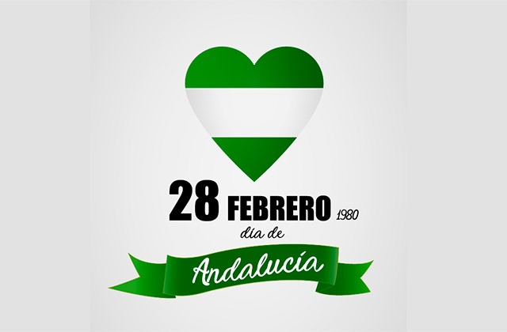
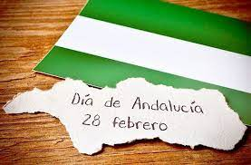

28 de Febrero.
DÍA
ANDALUCÍA
 
EL DÍA 28 DE FEBRERO CELEBRAMOS EL DÍA DE ANDALUCÍA CON LOS SIGUIENTES EVENTOS:
Vendremos a clase en el
IES Sierra de Segura
aunque sea fiesta y seguiremos aprendiendo
Leeremos en voy alta el siguiente
comunicado